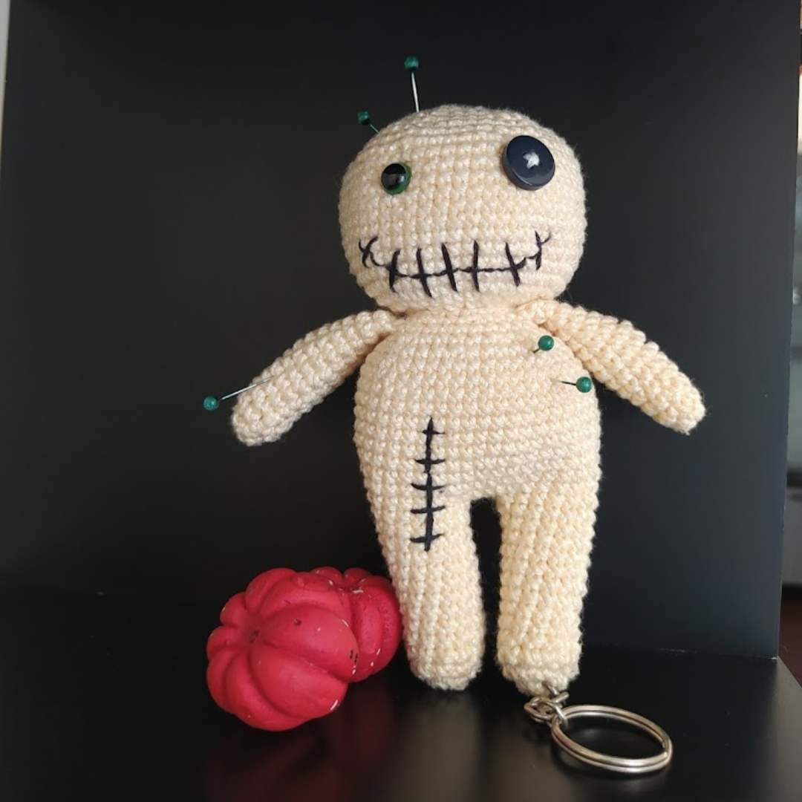

CROCHET
I learned the basics of crochet with my mom when I was a kid, so this type of work has a very special meaning to me. Crocheting is easy and fast, which makes it a great technic for people who don't like to spend days in one single project; you can get a small work done in hours and then jump right off to another new project in the same day.
I like crocheting accessories like hats, scarfs and socks, but my favorite technic is called amigurumi, which is the japanese art of crocheting stuffed creatures like animals, people or even objects. Here are 3 of my favorite works:
-
Alice in Wonderland Collection
My favorite work by far. Each toy takes approximately 6 to 7 hours to make.
-
Detective Pikachu
This was the first amigurumi I made and it took me some days to finish because I was still learning the technic.
-
Personalized Voodoo-doll
This is a very simple project to make, but it took me some extra hours because, unlike the other ones, I didn't have a pattern to follow, so I had to write the pattern myself.